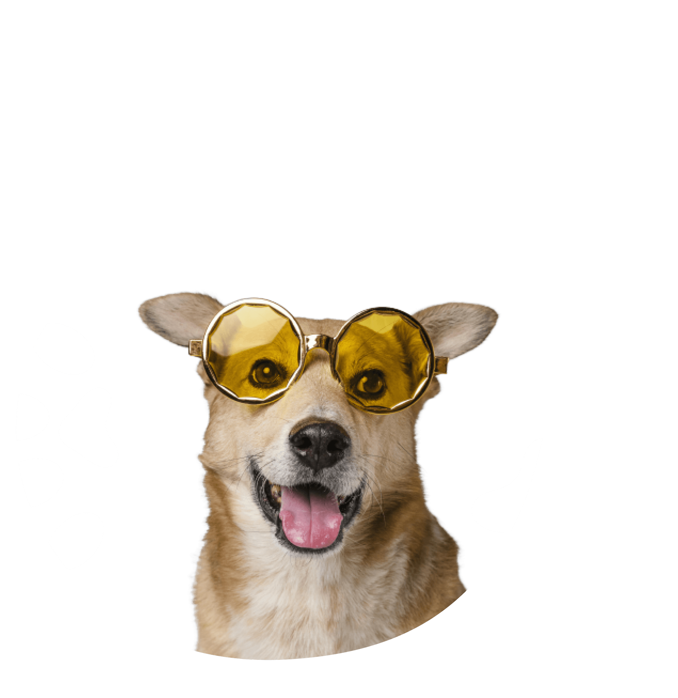
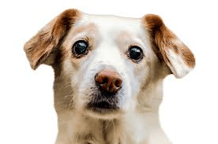

Pet profiles that stay alive
Each adopted pet has an evolving profile with check-ins, photos, status changes, and care context.
A Platform for Responsible Pet Adoption
An animal's life doesn't end at adoption. It begins there.
A connected system that helps shelters and adopters stay engaged after adoption through weekly check-ins, community support, and continuous monitoring.


The missing chapter
Once an animal leaves, there is often no clear way to know whether they are safe, adjusting, or being cared for properly.
"Once an animal leaves, there's no way to know:"
And for new owners, the journey can feel uncertain: questions, doubts, and advice that is not always right. PawPath keeps care connected after the adoption moment.
Beyond adoption
Instead of treating adoption as a one-time outcome, PawPath keeps every pet visible over time. Shelters can understand daily well-being and focus on the quality of life that follows.
Each adopted pet has an evolving profile with check-ins, photos, status changes, and care context.

Missed check-ins and risk signals are surfaced, assigned, and followed through before concerns disappear.

Owner questions stay visible, and unsafe advice can be flagged so support remains accurate and grounded.

Continuous monitoring
PawPath turns small weekly updates into a shared care record. The system highlights trends, missed moments, and situations that deserve human attention.
Owner app
After adoption, every owner joins the journey through a dedicated app: sharing weekly updates, connecting with other pet owners, and asking questions along the way.


The promise
They deserve to be seen, cared for, and supported every week, long after adoption.